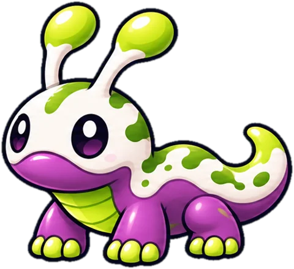

Tap a stage to read its story.
Zyphule is a lime-green slug with two antenna-stalks topped by round green bulbs, and a vivid purple mantle of slime trailing behind it. Bright green droplets ooze from its back and glow faintly in shadow, marking a trail anyone could follow through Verdant Valley's undergrowth. It moves very slowly, tasting everything it passes with its whole body, and pauses to touch each hand-carved stone in the valley floor with its antenna before moving on.
Field note: Zyphule's trail glows for exactly ninety minutes before fading - trackers in Verdant Valley use old trails to map where new creatures recently passed.
Verdant Valley. Zyphule and its family are found in the Verdant Valley. See everyone who lives there.
Share a Bond Food that matches its types to become friends. Zyphule loves:
A Bond Food is not a trick. It joins your spirit with the Kimuro's spirit, and only when it chooses you.
Print the Kimuro adventure packs: mazes, cards, a board game and Bond Mark medals.
See the printable packs